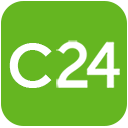

Subscription
Employers pay a recurring fee or plan. 91 entries are tagged this way.
| Board | Prominence | Type | HQ | Language | API | Partner program |
|---|---|---|---|---|---|---|
| Large #1,845 | Job board | PR | English | Partner-only API | yes | |
| Large #2,999 | Job board | China | Chinese | No known API | unknown | |
| Large #3,142 | Applicant tracking system | Greece | Not recorded | Self-serve API key | yes | |
| Large #3,253 | Job board | Russia | Russian | Self-serve API key | yes | |
| Large #3,441 | Job board | China | Chinese | No known API | unknown | |
| Large #3,703 | Job board | PR | English | API status unknown | unknown | |
| Large #3,793 | Board and aggregator | United States | English | Partner-only API | yes | |
| Large #5,796 | Applicant tracking system | Netherlands | Not recorded | Open API (no key) | yes | |
| Large #6,148 | Board and chat | China | Chinese | No known API | unknown | |
| Large #7,179 | Niche job board | United States | English | Partner-only API | yes | |
MediabistroJob board | Large #7,599 | Job board | Not recorded | Not recorded | API status unknown | unknown |
| Large #8,055 | Job board | Australia | English | Partner-only API | yes | |
| Large #8,315 | Job board | Japan | Japanese | No known API | unknown | |
| Large #8,572 | Government job site | United States | Not recorded | API status unknown | unknown | |
| Large #8,604 | Board and employer brand | France | French | Partner-only API | unknown | |
Cake (CakeResume)Job board | Established #10,237 | Job board | Taiwan | Not recorded | API status unknown | unknown |
| Established #10,735 | Applicant tracking system | United States | Not recorded | Open API (no key) | yes | |
| Established #11,609 | Job board | Germany | German | Partner-only API | yes | |
| Established #11,832 | Niche job board | United States | English | Partner-only API | yes | |
| Established #11,990 | Applicant tracking system | United States | Not recorded | Self-serve API key | yes | |
| Established #13,306 | Job board | United Kingdom | English | Self-serve API key | yes | |
| Established #14,987 | Job board | India | English | Partner-only API | unknown | |
| Established #15,838 | Job board | Spain | Spanish | Partner-only API | yes | |
| Established #16,458 | Job board | United Kingdom | English | Partner-only API | yes | |
| Established #17,388 | Job board | Not recorded | French | API status unknown | unknown | |
| Established #17,768 | Job board | South Korea | Korean | Self-serve API key | unknown | |
| Established #22,582 | Job board | Malaysia | English | Partner-only API | yes | |
| Established #23,178 | Job board | Poland | Polish | Partner-only API | yes | |
| Established #23,784 | Job board | United Arab Emirates | English | API status unknown | unknown | |
| Established #24,875 | Freelance marketplace | Not recorded | Not recorded | API status unknown | unknown | |
| Established #25,154 | Job board | South Korea | Korean | API key on request | unknown | |
| Established #26,849 | Job board | Hong Kong | English | Partner-only API | yes | |
| Established #33,266 | Job board | Brazil | Portuguese | API status unknown | unknown | |
| Established #37,351 | Job board | United Kingdom | English | Partner-only API | yes | |
Employment HeroHR and recruiting technology | Established #41,844 | HR technology vendor | Not recorded | Not recorded | API status unknown | yes |
| Established #47,385 | Multiposting | Poland | Polish | API status unknown | unknown | |
| Established #47,509 | Job board | Switzerland | German | Partner-only API | yes | |
| Established #48,457 | Job board | Colombia | Spanish | API status unknown | unknown | |
| Established #55,713 | Job board | Brazil | Portuguese | API status unknown | unknown | |
| Established #56,361 | HR technology vendor | Not recorded | Not recorded | API status unknown | unknown | |
| Established #64,985 | Applicant tracking system | United States | Not recorded | Self-serve API key | yes | |
| Established #69,692 | Job board | United Arab Emirates | English | API status unknown | unknown | |
| Established #71,818 | Niche job board | Canada | English | No known API | unknown | |
| Established #77,993 | Job board | United Arab Emirates | English | API status unknown | unknown | |
| Established #78,809 | Job board | Denmark | Danish | Partner-only API | yes | |
| Established #79,103 | Freelance marketplace | United States | Not recorded | API status unknown | yes | |
| Established #79,835 | HR technology vendor | Not recorded | Not recorded | API key on request | yes | |
| Established #85,293 | Job board | Mexico | Spanish | API status unknown | unknown | |
| Small #113,475 | Job board | Canada | French | Partner-only API | unknown | |
| Small #128,765 | Job board | India | English | API status unknown | unknown | |
| Small #139,656 | Job board | South Africa | English | API status unknown | unknown | |
| Small #156,486 | Job board | South Korea | Korean | API status unknown | unknown | |
| Small #161,798 | Job board | Nigeria | English | API status unknown | unknown | |
| Small #172,312 | HR technology vendor | Not recorded | Not recorded | API status unknown | unknown | |
| Small #172,868 | Job board | Not recorded | Polish | API status unknown | unknown | |
| Small #221,820 | Job board | Philippines | English | API status unknown | unknown | |
| Small #232,631 | Job aggregator | Germany | Not recorded | API status unknown | unknown | |
 | Small #262,138 | Job board | South Africa | English | API status unknown | unknown |
| Small #282,159 | Niche job board | Not recorded | English | API status unknown | unknown | |
| Small #336,145 | Niche job board | Not recorded | English | API status unknown | unknown | |
| Small #362,889 | Niche job board | Not recorded | Dutch | API status unknown | unknown | |
| Small #370,926 | Job board | Kenya | English | API status unknown | unknown | |
| Small #423,688 | Multiposting | United Kingdom | English | Partner-only API | yes | |
| Small #481,409 | Niche job board | Not recorded | Not recorded | API key on request | unknown | |
| Small #481,821 | Job board | Canada | English | API status unknown | unknown | |
| Small #595,315 | Job board | Canada | English | No known API | unknown | |
| Small #601,395 | Job board | Argentina | Spanish | API status unknown | unknown | |
| Small #683,375 | Job board | Not recorded | English | API status unknown | unknown | |
| Small #754,944 | Niche job board | Not recorded | Not recorded | API status unknown | unknown | |
| Small #811,404 | Niche job board | Not recorded | Not recorded | API status unknown | unknown | |
| Site-wide #1,814 | Job board | Japan | Japanese | No known API | unknown | |
| Site-wide #4,296 | Board and employer brand | United States | English | Self-serve API key | unknown | |
KleinanzeigenJob board | Site-wide #6,912 | Job board | Not recorded | Not recorded | API status unknown | unknown |
| Not comparable | Classifieds and board | Norway | Norwegian | Partner-only API | unknown | |
JOBTOPGUNJob board | Not comparable | Job board | Not recorded | Not recorded | API status unknown | unknown |
| Not comparable | Niche job board | Not recorded | Norwegian | API status unknown | unknown | |
| Not comparable | Social network and board | United States | English | Partner-only API | yes | |
| Not comparable | Niche job board | Not recorded | English | API status unknown | unknown | |
| Not comparable | Niche job board | United Kingdom | Not recorded | API status unknown | unknown | |
WorkeerJob board | Not comparable | Job board | Germany | Not recorded | API status unknown | unknown |
| Not comparable | Social network and board | Germany | German | Partner-only API | yes | |
ClozJob board | Not in top 1M | Job board | Not recorded | Uzbek | API status unknown | unknown |
EnRoute JobsJob board | Not in top 1M | Job board | Not recorded | Not recorded | API status unknown | unknown |
Go Zambia JobsJob board | Not in top 1M | Job board | Not recorded | Not recorded | API status unknown | unknown |
| Not in top 1M | Niche job board | Canada | English | No known API | unknown | |
| Not in top 1M | Niche job board | Not recorded | English | API status unknown | unknown | |
Jobstoday Ltd.Job board | Not in top 1M | Job board | Not recorded | Not recorded | API status unknown | unknown |
Maison de TalentsJob board | Not in top 1M | Job board | Not recorded | Not recorded | API status unknown | unknown |
| Not in top 1M | Job board | Not recorded | Spanish | API status unknown | unknown | |
| Not in top 1M | Job board | Switzerland | Not recorded | API status unknown | unknown | |
Vieclam.netJob board | Not in top 1M | Job board | Vietnam | Not recorded | API status unknown | unknown |